Our Journey
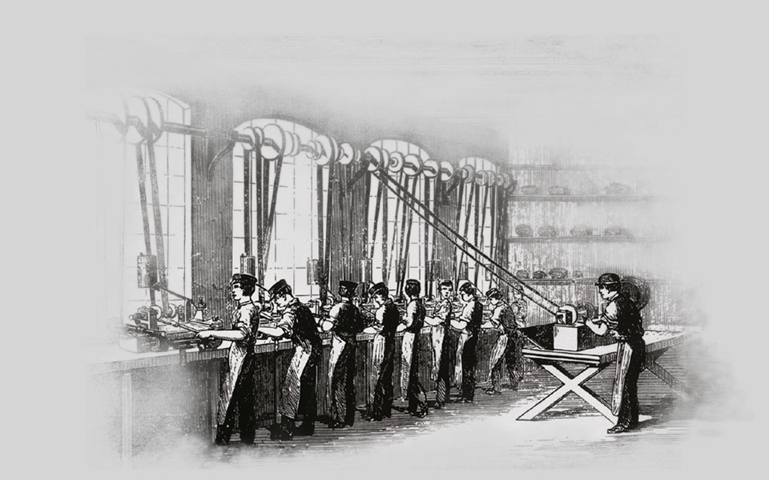
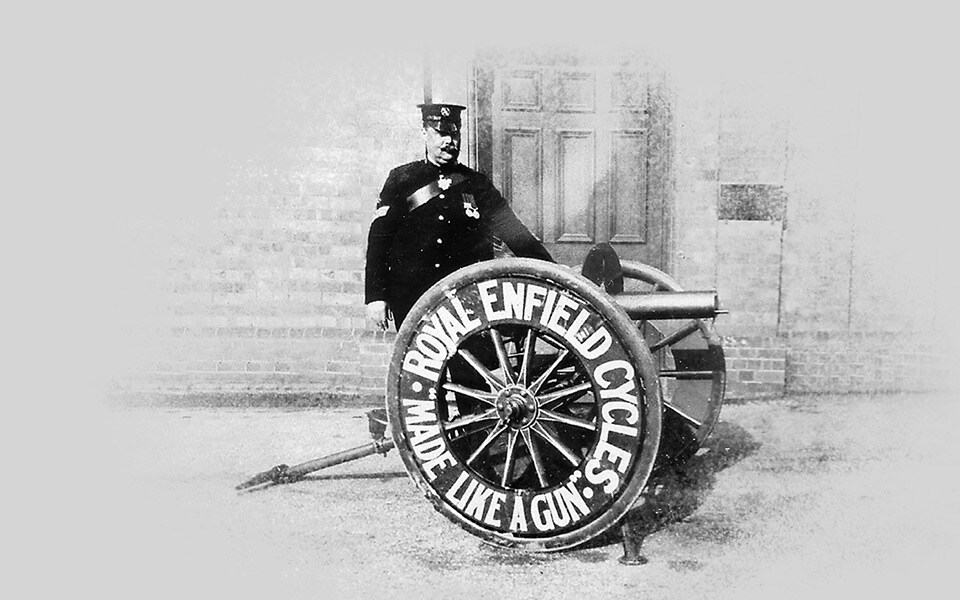
1893
The duo win a contract to supply precision parts to the Royal Small Arms Factory of Enfield, Middlesex. To celebrate this prestigious order, they rename their undertaking the Enfield Manufacturing Company Ltd. and call their first Bob Walker Smith designed bicycle, the Enfield. The following year, their bicycles are renamed Royal Enfields and the trademark ‘Made Like A Gun’ is introduced.
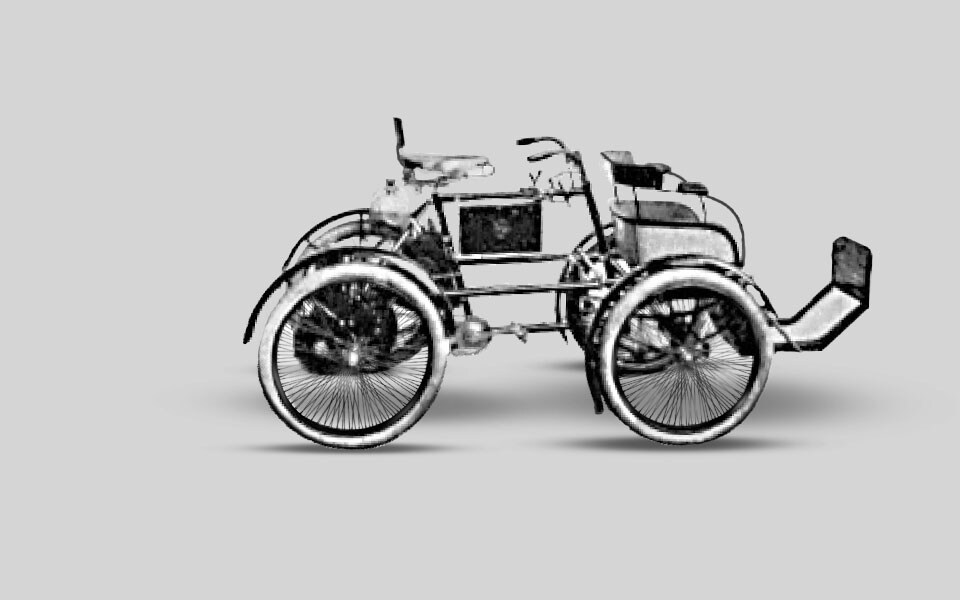
1898
Bob Walker Smith designs the company’s first motorised vehicle. Known as a quadricycle, it is built around two sturdy bicycle frames and uses a proprietary 1 1/2 hp De Dion engine. The company finalises its trading name as The Enfield Cycle Co. Ltd., a name it is to use for the following 70 years.
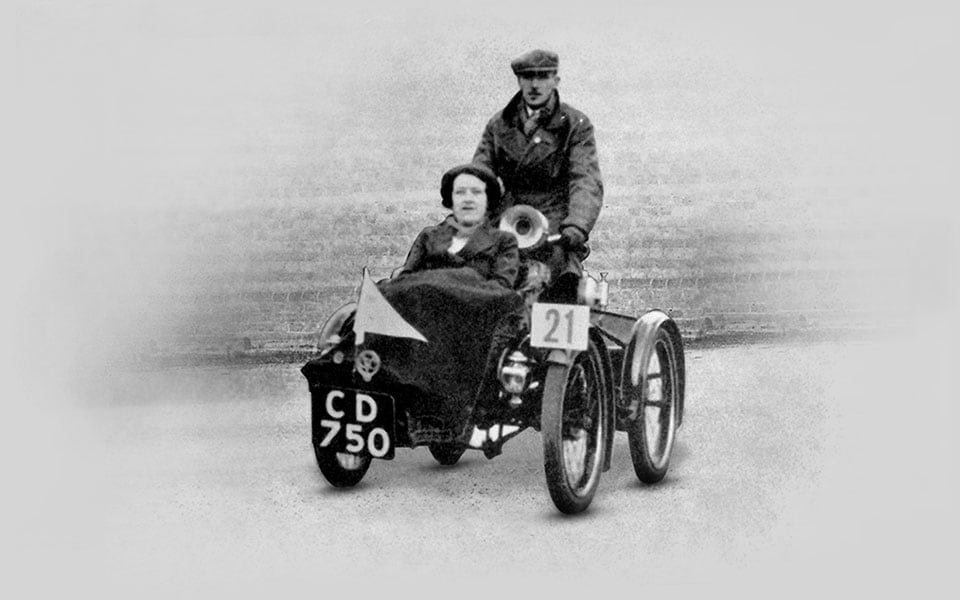
1900
Royal Enfield delves into motorsport when one of its quadricycles enters the inaugural 1000 Mile Trial. Following a torturous cross-country route from London to Edinburgh and back, the event does much to convince the British public of the viability of motorised transport.
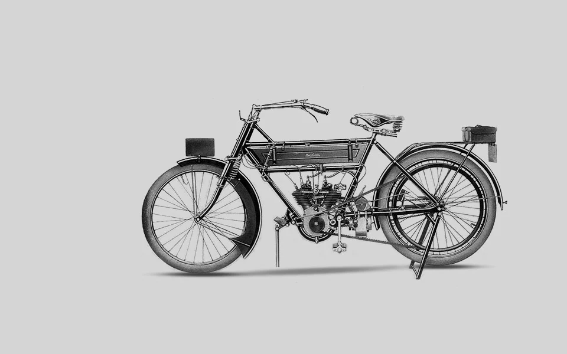
1909
The first Royal Enfield motorcycle is produced. Designed by Bob Walker Smith and Frenchman Jules Gobiet, it is launched at the Stanley Cycle Show in London. The 1 1/2 hp engine is mounted in front of the steering head and the rear wheel driven by a long rawhide belt.
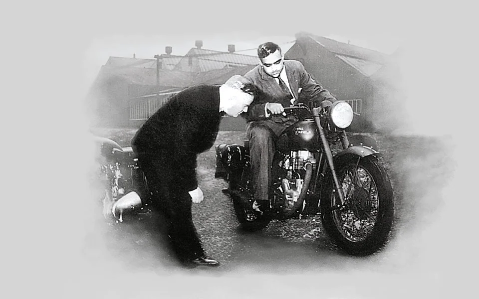
1952
Royal Enfield's star rider, Johnny Brittain, wins the prestigious Scottish Six Days Trial on his 350cc Bullet, HNP 331.
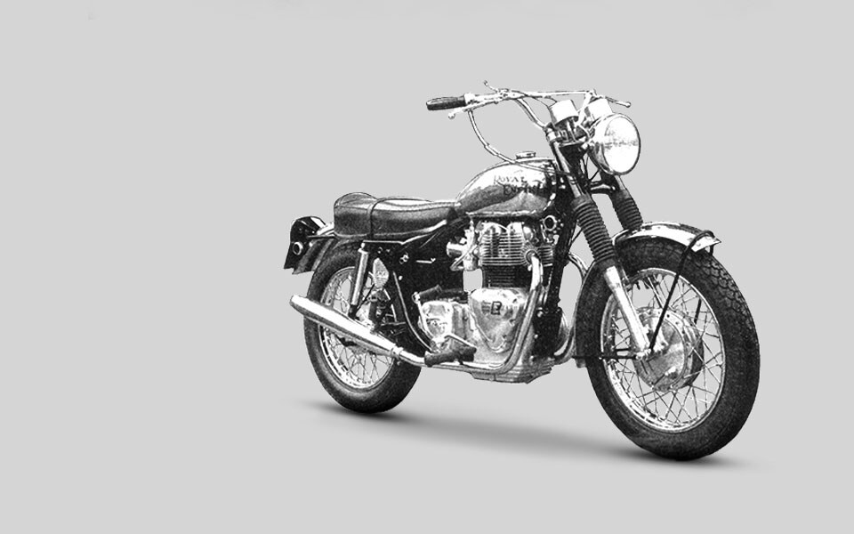
1967
With only two models left in production at the start of the year – the 250cc Continental GT and the 736cc Interceptor – Royal Enfield’s Redditch facility closes and the site sold to developers. Production of the Interceptor continues at Enfield’s underground facility at Upper Westwood, near Bradford on Avon, until its closure in June 1970.
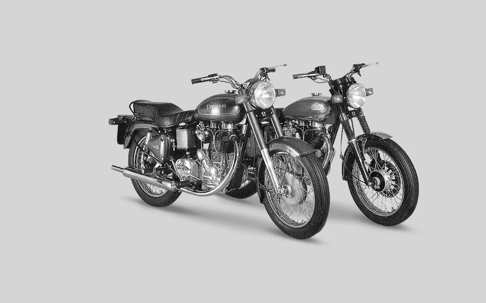
1989
A new 24 bhp 500cc Bullet is released. The bike is primarily aimed at export markets where it is available in Classic, Deluxe and Superstar trim.
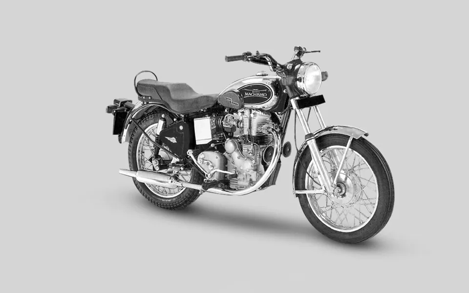
1999
Utilising the design skills of Austrian company AVL, production of a revised 350cc all-aluminum lean-burn Bullet engine, known as the A350, begins at a new Royal Enfield plant near Jaipur, Rajasthan.
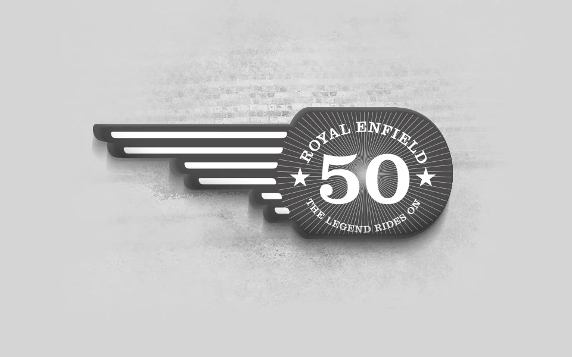
2005
Royal Enfield celebrates its 50th anniversary in India with the release of commemorative Thunderbird and Bullet Electra models and ‘The Legend Rides On’ coffee table book.
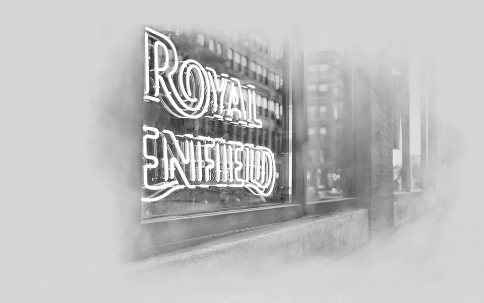
2015
Royal Enfield North America is established. With headquarters in Milwaukee, Wisconsin, it’s the company’s first direct distribution subsidiary outside of India.
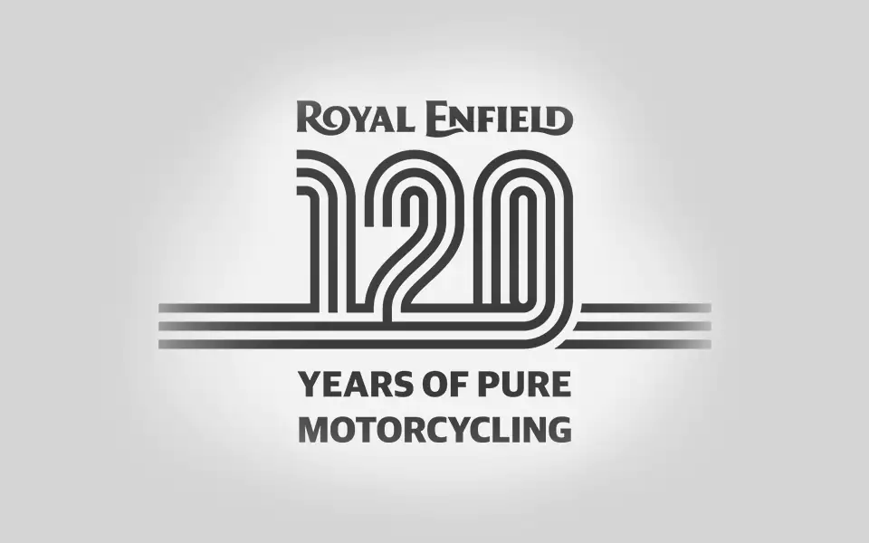